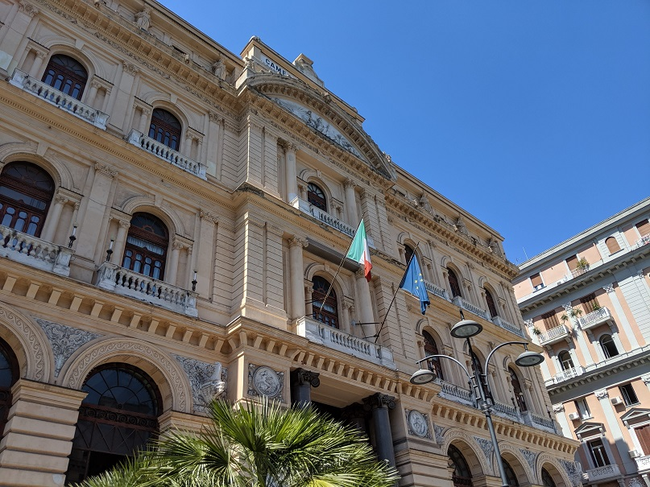
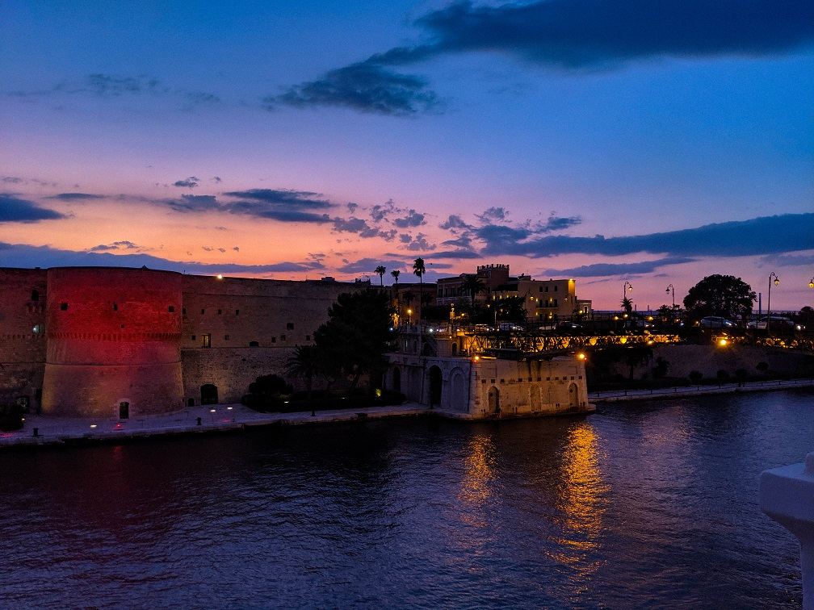
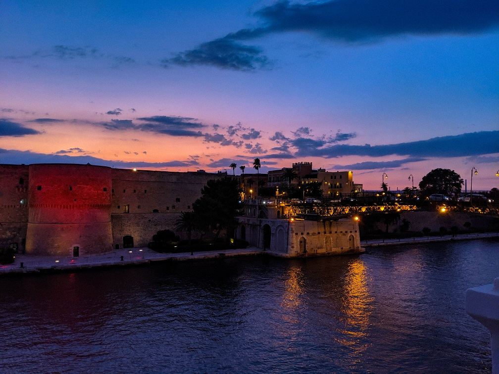

Stay duration 2 days, 2019
The capital of the south: Naples, or Napoli in Italian. An immensely important historic city, home to the Palazzo Reale di Napoli, Castelnuovo & the Piazza del Plebiscito. A place where all beings are overlooked by the distant Monte Vesuvio. There is a vibrant feeling rising from the well-walked streets, though the bustle is not without its downsides.
Napoli struggles with waste management. Between 1994 and 2008 Campania even declared it to be in a state of emergency, and whilst the worst has passed, the city is still hampered by its ineffectiveness at dealing with litter. Coupled with the infamously dodgy driving, the city is masked by an air of inhospitality. Its people are much the opposite however. People are friendly, as they tend to be in Italy, and are happy to provide one of the most iconic foods the world over, that is of course, pizza. Napoli invented pizza, all the way back in the 18th Century, and its supremacy is still unmatched the world over. A simple margherita is a culinary journey through the intricate balance between the sweet passata and the charred base.

A quintessential Italian city, Napoli is full of character and gives you much to take in. For day trips out of the city: the Amalfi Coast, a coastal paradise, lies just to the south-east.
 
